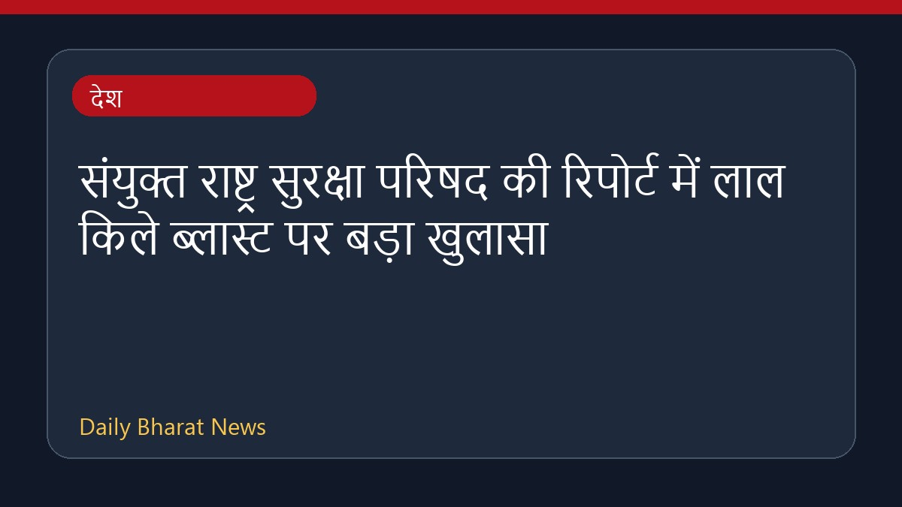
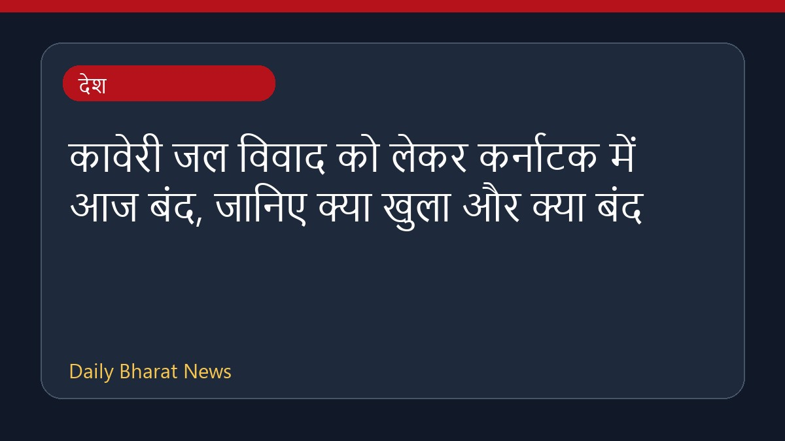
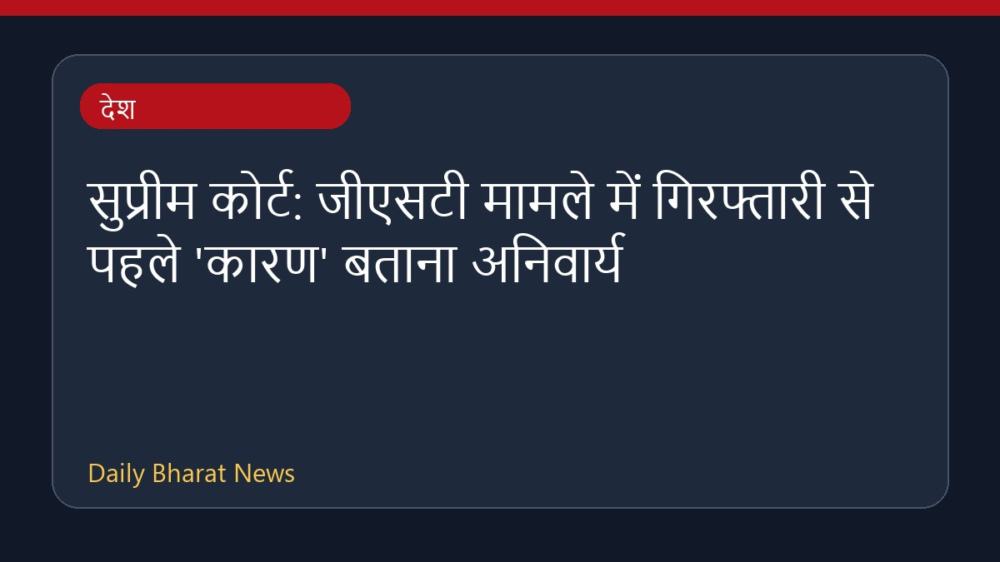

NALASAR के छात्रों ने सीजेआई सूर्यकांत को मुख्य अतिथि बनाने का किया विरोध

हैदराबाद स्थित प्रतिष्ठित एनएएलएसएआर विधि विश्वविद्यालय के लगभग 450 निवर्तमान छात्रों ने दीक्षांत समारोह में मुख्य अतिथि के रूप में सीजेआई सूर्यकांत को आमंत्रित किए जाने पर आपत्ति जताई है। छात्रों का यह विरोध उनके द्वारा नीट विरोध प्रदर्शनों के दौरान की गई कथित टिप्पणियों को लेकर है। इस संबंध में छात्रों की प्रतिक्रियाएँ सामने आई हैं, जिनमें दीक्षांत समारोह के लिए मुख्य अतिथि के रूप में उनके आमंत्रण को लेकर असंतोष व्यक्त किया गया है। वर्तमान में इस विषय पर अधिक विवरण सीमित हैं।
मूल स्रोत: India News Sources
NALSAR students oppose CJI Surya Kant as convocation chief guest over NEET protest remarks - Moneycontrol.com ↗
NALSAR students oppose CJI Surya Kant as convocation chief guest over NEET protest remarks - Moneycontrol.com ↗
संबंधित खबरें

देशसंयुक्त राष्ट्र सुरक्षा परिषद की रिपोर्ट में लाल किले ब्लास्ट पर बड़ा खुलासा

देशकावेरी जल विवाद को लेकर कर्नाटक में आज बंद, जानिए क्या खुला और क्या बंद

देशसुप्रीम कोर्ट: जीएसटी मामले में गिरफ्तारी से पहले 'कारण' बताना अनिवार्य
 देश
देश